Дроби можно складывать, вычитать, умножать и делить. Их также можно сравнивать между собой. В общем, с дробями можно выполнять те же действия, что и с обычными числами.
Содержание урока- Сложение дробей с одинаковыми знаменателями
- Сложение дробей с разными знаменателями
- Вычитание дробей с одинаковыми знаменателями
- Вычитание дробей с разными знаменателями
- Умножение дроби на число
- Умножение дробей
- Представление целого числа в виде дроби
- Обратные числа
- Деление дроби на число
- Деление числа на дробь
- Деление дробей
- Задания для самостоятельного решения
Сложение дробей с одинаковыми знаменателями
Сложение дробей бывает двух видов:
- сложение дробей с одинаковыми знаменателями;
- сложение дробей с разными знаменателями.
Сначала изучим сложение дробей с одинаковыми знаменателями. Это очень просто: чтобы сложить такие дроби, нужно сложить их числители, а знаменатель оставить без изменений.
Например, слóжим дроби \(\frac{2}{4}\) и
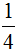
. Складываем числители, а знаменатель оставляем без изменений: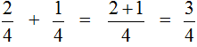
Этот пример можно легко понять, если вспомнить про пиццу, которая разделена на четыре части. Если к \(\frac{2}{4}\) пиццы прибавить пиццы, то получится
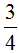
пиццы: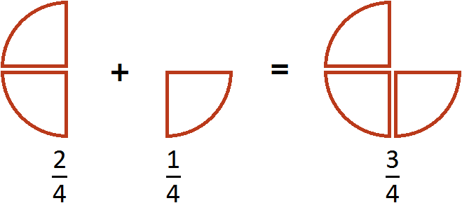
Пример 2. Сложить дроби \(\frac{1}{2}\) и \(\frac{1}{2}\) .
Опять же складываем числители, а знаменатель оставляем без изменения:
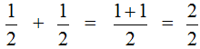
В ответе получилась неправильная дробь
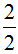
. Если наступает конец задачи, то от неправильных дробей принято избавляться. Чтобы избавится от неправильной дроби, нужно выделить в ней целую часть. В нашем случае целая часть выделяется легко — два разделить на два будет один: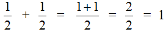
Этот пример можно легко понять, если вспомнить про пиццу, которая разделена на две части. Если к \(\frac{1}{2}\) пиццы прибавить еще \(\frac{1}{2}\) пиццы, то получится одна целая пицца:
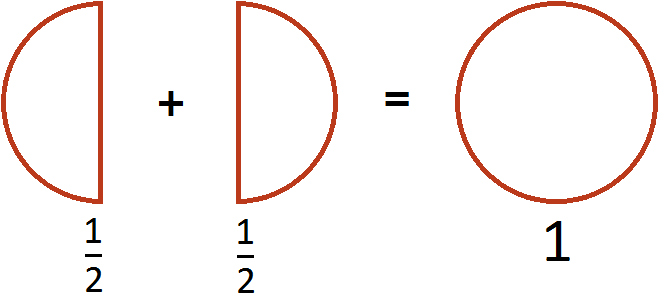
Пример 3. Сложить дроби
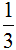
и .Опять же складываем числители, а знаменатель оставляем без изменения:
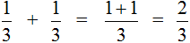
Этот пример можно легко понять, если вспомнить про пиццу, которая разделена на три части. Если к пиццы прибавить ещё пиццы, то получится
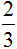
пиццы: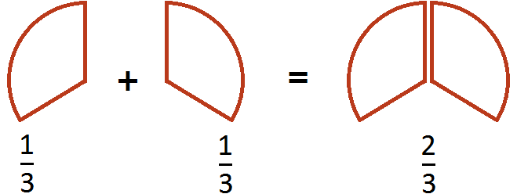
Пример 4. Найти значение выражения
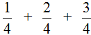
Этот пример решается точно так же, как и предыдущие. Числители необходимо сложить, а знаменатель оставить без изменения:
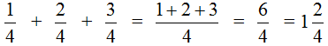
Изобразим наше решение с помощью рисунка. Если к \(\frac{1}{4}\) пиццы прибавить \(\frac{2}{4}\) пиццы и ещё прибавить \(\frac{3}{4}\) пиццы, то получится 1 целая и ещё \(\frac{2}{4}\) пиццы.
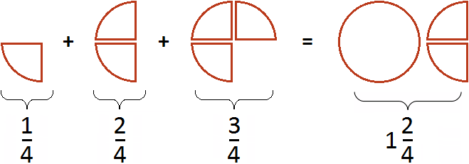
Как видите в сложении дробей с одинаковыми знаменателями нет ничего сложного. Достаточно понимать следующие правила:
- Чтобы сложить дроби с одинаковыми знаменателями, нужно сложить их числители, а знаменатель оставить без изменения;
- Если в ответе получилась неправильная дробь, то нужно выделить в ней целую часть.
Сложение дробей с разными знаменателями
Теперь научимся складывать дроби с разными знаменателями. Когда складывают дроби, знаменатели этих дробей должны быть одинаковыми. Но одинаковыми они бывают не всегда.
Например, дроби \(\frac{2}{4}\) и сложить можно, поскольку у них одинаковые знаменатели.
А вот дроби и \(\frac{1}{2}\) сразу сложить нельзя, поскольку у этих дробей разные знаменатели. В таких случаях дроби нужно приводить к одинаковому (общему) знаменателю.
Приведение дробей к одинаковому знаменателю выполняется в несколько шагов.
Сначала нужно найти наименьшее общее кратное (НОК) знаменателей обеих дробей.
Затем НОК делят на знаменатель первой дроби и получают дополнительный множитель для первой дроби. Точно так же НОК делят на знаменатель второй дроби и получают дополнительный множитель для второй дроби.
После этого числитель и знаменатель каждой дроби умножают на её дополнительный множитель. В результате дроби с разными знаменателями приводятся к общему знаменателю. А складывать такие дроби мы уже умеем. А как складывать такие дроби мы уже умеем.
Пример 1. Сложим дроби \(\frac{2}{3}\) и \(\frac{1}{2}\)
У этих дробей разные знаменатели, поэтому нужно привести их к одинаковому (общему) знаменателю.
В первую очередь находим наименьшее общее кратное (НОК) знаменателей обеих дробей.
Знаменатель первой дроби это число 3, а знаменатель второй дроби — число 2. Наименьшее общее кратное этих чисел равно 6
НОК (2 и 3) = 6
Теперь возвращаемся к дробям \(\frac{2}{3}\) и \(\frac{1}{2}\).
Сначала разделим НОК на знаменатель первой дроби и получим первый дополнительный множитель. НОК это число 6, а знаменатель первой дроби это число 3. Делим 6 на 3, получаем 2.
Полученное число 2 это первый дополнительный множитель. Записываем его к первой дроби. Для этого делаем небольшую косую линию над дробью и записываем над ней найденный дополнительный множитель:
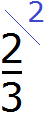
Аналогично поступаем и со второй дробью. Делим НОК на знаменатель второй дроби и получаем второй дополнительный множитель. НОК это число 6, а знаменатель второй дроби — число 2. Делим 6 на 2, получаем 3.
Полученное число 3 это второй дополнительный множитель. Записываем его ко второй дроби. Опять же делаем небольшую косую линию над второй дробью и записываем над ней найденный дополнительный множитель:
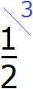
Теперь у нас всё готово для сложения. Осталось умножить числители и знаменатели дробей на свои дополнительные множители:
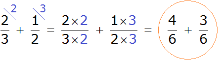
Посмотрите внимательно, к чему мы пришли. Дроби с разными знаменателями превратились в дроби с одинаковыми знаменателями. А складывать такие дроби мы уже умеем. Давайте решим этот пример до конца:
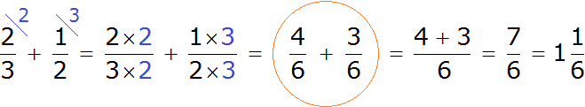
Таким образом, если к \(\frac{2}{3}\) прибавить \(\frac{1}{2}\) получается
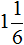
.Изобразим наше решение с помощью рисунка. Если к \(\frac{2}{3}\) пиццы прибавить \(\frac{1}{2}\) пиццы, то получится одна целая пицца и еще одна шестая пиццы:
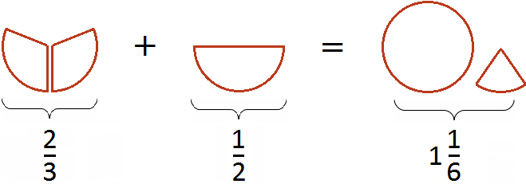
Приведение дробей к одинаковому (общему) знаменателю также можно изобразить с помощью рисунка. Приведя дроби \(\frac{2}{3}\) и \(\frac{1}{2}\) к общему знаменателю, мы получили дроби \(\frac{4}{6}\) и
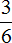
. Эти две дроби будут изображаться теми же кусками пицц. Различие будет лишь в том, что в этот раз они будут разделены на одинаковые доли (приведены к одинаковому знаменателю).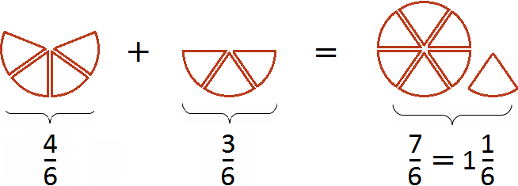
Первый рисунок изображает дробь \(\frac{4}{6}\) (четыре кусочка из шести), а второй рисунок — дробь (три кусочка из шести). Сложив эти кусочки мы получаем \(\frac{7}{6}\) (семь кусочков из шести). Эта дробь неправильная, поэтому мы выделили в ней целую часть. В результате получили (одну целую пиццу и еще одну шестую пиццы).
Отметим, что мы расписали данный пример слишком подробно. В учебных заведениях не принято писать так развёрнуто. Нужно уметь быстро находить НОК обоих знаменателей и дополнительные множители к ним, а также быстро умножать найденные дополнительные множители на свои числители и знаменатели. Находясь в школе, нам пришлось бы записать данный пример так:
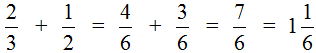
Но есть и обратная сторона медали. Если на первых этапах изучения математики не делать подробных записей, могут возникнуть вопросы: «Откуда взялась эта цифра?» или «Почему дроби вдруг превратились в другие дроби?»
Поэтому на первых этапах советуем записывать каждую мелочь. Хвастаться можно лишь в будущем, когда будут усвоены азы.
Чтобы легче было складывать дроби с разными знаменателями, можно воспользоваться следующей пошаговой инструкцией:
- Найти НОК знаменателей дробей;
- Разделить НОК на знаменатель каждой дроби и получить дополнительный множитель для каждой дроби;
- Умножить числители и знаменатели дробей на свои дополнительные множители;
- Сложить дроби, у которых одинаковые знаменатели;
- Если в ответе получилась неправильная дробь, то выделить её целую часть.
Пример 2. Найти значение выражения
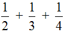
.Воспользуемся инструкцией, которая приведена выше.
Шаг 1. Найти НОК знаменателей дробей
Находим НОК знаменателей дробей. Знаменатели дробей это числа 2, 3 и 4
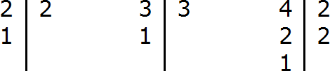
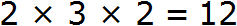
Шаг 2. Разделить НОК на знаменатель каждой дроби и получить дополнительный множитель для каждой дроби
Делим НОК на знаменатель первой дроби. НОК это число 12, а знаменатель первой дроби это число 2. Делим 12 на 2, получаем 6. Получили первый дополнительный множитель 6. Записываем его над первой дробью:
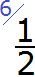
Теперь делим НОК на знаменатель второй дроби. НОК это число 12, а знаменатель второй дроби это число 3. Делим 12 на 3, получаем 4. Получили второй дополнительный множитель 4. Записываем его над второй дробью:
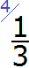
Теперь делим НОК на знаменатель третьей дроби. НОК это число 12, а знаменатель третьей дроби это число 4. Делим 12 на 4, получаем 3. Получили третий дополнительный множитель 3. Записываем его над третьей дробью:
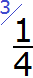
Шаг 3. Умножить числители и знаменатели дробей на свои дополнительные множители
Умножаем числители и знаменатели на свои дополнительные множители:
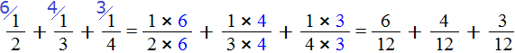
Шаг 4. Сложить дроби у которых одинаковые знаменатели
Мы пришли к тому, что дроби у которых были разные знаменатели, превратились в дроби, у которых одинаковые (общие) знаменатели. Осталось сложить эти дроби. Складываем:
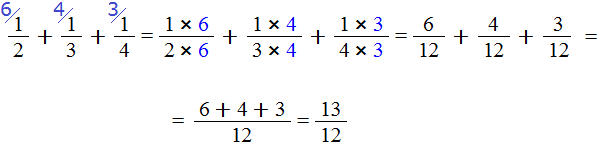
Сложение не поместилось на одной строке, поэтому мы перенесли оставшееся выражение на следующую строку. Это допускается в математике. Когда выражение не помещается на одну строку, его переносят на следующую строку, при этом надо обязательно поставить знак равенства = на конце первой строки и в начале новой строки. Знак равенства на второй строке говорит о том, что это продолжение выражения, которое было на первой строке.
Шаг 5. Если в ответе получилась неправильная дробь, то выделить в ней целую часть
У нас в ответе получилась неправильная дробь. Мы должны выделить у неё целую часть. Выделяем:
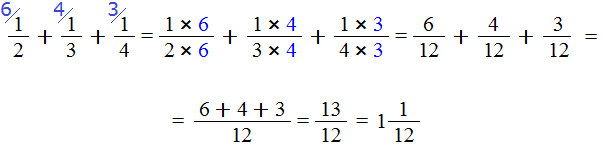
Получили ответ
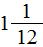
Вычитание дробей с одинаковыми знаменателями
Вычитание дробей бывает двух видов:
- Вычитание дробей с одинаковыми знаменателями;
- Вычитание дробей с разными знаменателями.
Сначала изучим вычитание дробей с одинаковыми знаменателями.
Чтобы вычесть из одной дроби другую, нужно из числителя первой дроби вычесть числитель второй дроби, а знаменатель оставить без изменения.
Например, найдём значение выражения
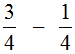
. Чтобы решить этот пример, надо из числителя первой дроби вычесть числитель второй дроби, а знаменатель оставить без изменения. Так и сделаем: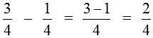
Этот пример можно легко понять, если вспомнить про пиццу, которая разделена на четыре части. Если от пиццы отрезать пиццы, то останется \(\frac{2}{4}\) пиццы:
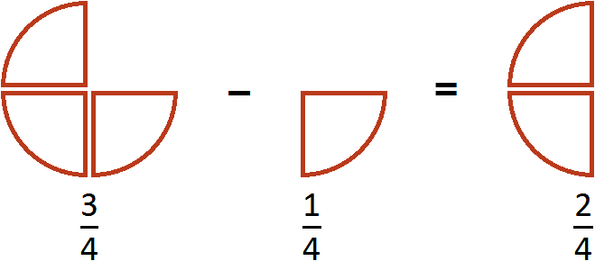
Пример 2. Найти значение выражения
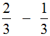
.Опять же из числителя первой дроби вычитаем числитель второй дроби, а знаменатель оставляем без изменения:
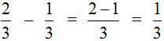
Этот пример можно легко понять, если вспомнить про пиццу, которая разделена на три части. Если от пиццы отрезать пиццы, то получится пиццы:
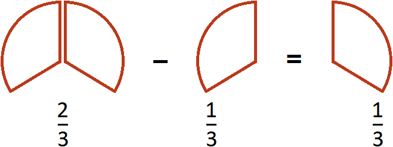
Пример 3. Найти значение выражения
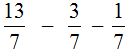
Этот пример решается точно также, как и предыдущие. Из числителя первой дроби нужно вычесть числители остальных дробей:
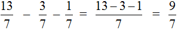
В ответе получилась неправильная дробь. Выделим в ней целую часть:
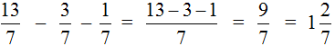
Как видите в вычитании дробей с одинаковыми знаменателями ничего сложного нет. Достаточно понимать следующие правила:
- Чтобы вычесть из одной дроби другую, нужно из числителя первой дроби вычесть числитель второй дроби, а знаменатель оставить без изменения;
- Если в ответе получилась неправильная дробь, то нужно выделить в ней целую часть.
Вычитание дробей с разными знаменателями
Теперь научимся вычитать дроби у которых разные знаменатели. Когда вычитают дроби их знаменатели должны быть одинаковыми. Но одинаковыми они бывают не всегда.
Например, от дроби можно вычесть дробь , поскольку у этих дробей одинаковые знаменатели. А вот от дроби нельзя вычесть дробь , поскольку у этих дробей разные знаменатели. В таких случаях дроби нужно приводить к одинаковому (общему) знаменателю.
Общий знаменатель находят по тому же правилу, которым мы пользовались при сложении дробей с разными знаменателями.
В первую очередь находят НОК знаменателей обеих дробей. Затем НОК делят на знаменатель первой дроби и получают первый дополнительный множитель, который записывается над первой дробью. Аналогично НОК делят на знаменатель второй дроби и получают второй дополнительный множитель, который записывается над второй дробью.
Затем дроби умножаются на свои дополнительные множители. В результате этих операций, дроби у которых были разные знаменатели, обращаются в дроби, у которых одинаковые знаменатели. А как вычитать такие дроби мы уже знаем.
Пример 1. Найти значение выражения:
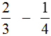
У этих дробей разные знаменатели, поэтому нужно привести их к одинаковому (общему) знаменателю.
Сначала находим НОК знаменателей обеих дробей. Знаменатель первой дроби это число 3, а знаменатель второй дроби — число 4. Наименьшее общее кратное этих чисел равно 12
НОК (3 и 4) = 12
Теперь возвращаемся к дробям и
Найдём дополнительный множитель для первой дроби. Для этого разделим НОК на знаменатель первой дроби. НОК это число 12, а знаменатель первой дроби — число 3. Делим 12 на 3, получаем 4. Записываем четвёрку над первой дробью:
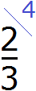
Аналогично поступаем и со второй дробью. Делим НОК на знаменатель второй дроби. НОК это число 12, а знаменатель второй дроби — число 4. Делим 12 на 4, получаем 3. Записываем тройку над второй дробью:
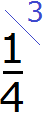
Теперь у нас всё готово для вычитания. Осталось умножить дроби на свои дополнительные множители:
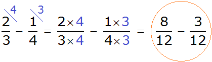
Мы пришли к тому, что дроби у которых были разные знаменатели, превратились в дроби у которых одинаковые знаменатели. А как вычитать такие дроби мы уже знаем. Давайте дорешаем этот пример до конца:
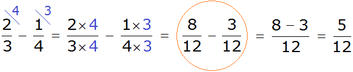
Получили ответ
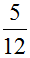
Изобразим наше решение с помощью рисунка. Если от пиццы отрезать пиццы, то получится пиццы
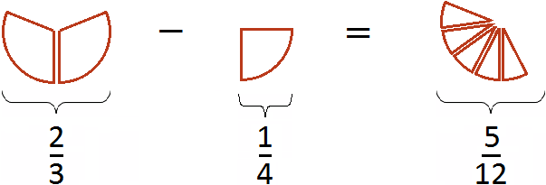
Это подробная версия решения. Находясь в школе, нам пришлось бы решить этот пример покороче. Выглядело бы это решение так:
Приведение дробей и к общему знаменателю также может быть изображено с помощью рисунка. Приведя эти дроби к общему знаменателю, мы получили дроби и . Эти дроби будут изображаться теми же кусочками пицц, но в этот раз они будут разделены на одинаковые доли (приведены к одинаковому знаменателю):
Первый рисунок изображает дробь (восемь кусочков из двенадцати), а второй рисунок — дробь (три кусочка из двенадцати). Отрезав от восьми кусочков три кусочка мы получаем пять кусочков из двенадцати. Дробь и описывает эти пять кусочков.
Пример 2. Найти значение выражения
У этих дробей разные знаменатели, поэтому сначала нужно привести их к одинаковому (общему) знаменателю.
Найдём НОК знаменателей этих дробей.
Знаменатели дробей это числа 10, 3 и 5. Наименьшее общее кратное этих чисел равно 30
НОК (10, 3, 5) = 30
Теперь находим дополнительные множители для каждой дроби. Для этого разделим НОК на знаменатель каждой дроби.
Найдём дополнительный множитель для первой дроби. НОК это число 30, а знаменатель первой дроби — число 10. Делим 30 на 10, получаем первый дополнительный множитель 3. Записываем его над первой дробью:
Теперь находим дополнительный множитель для второй дроби. Разделим НОК на знаменатель второй дроби. НОК это число 30, а знаменатель второй дроби — число 3. Делим 30 на 3, получаем второй дополнительный множитель 10. Записываем его над второй дробью:
Теперь находим дополнительный множитель для третьей дроби. Разделим НОК на знаменатель третьей дроби. НОК это число 30, а знаменатель третьей дроби — число 5. Делим 30 на 5, получаем третий дополнительный множитель 6. Записываем его над третьей дробью:
Теперь всё готово для вычитания. Осталось умножить дроби на свои дополнительные множители:
Мы пришли к тому, что дроби у которых были разные знаменатели, превратились в дроби у которых одинаковые (общие) знаменатели. А как вычитать такие дроби мы уже знаем. Давайте дорешаем этот пример.
Продолжение примера не поместится на одной строке, поэтому переносим продолжение на следующую строку. Не забываем про знак равенства = на новой строке:
В ответе получилась правильная дробь, и вроде бы нас всё устраивает, но она слишком громоздка и некрасива. Надо бы сделать её проще. А что можно сделать? Можно сократить эту дробь.
Чтобы сократить дробь , нужно разделить её числитель и знаменатель на наибольший общий делитель (НОД) чисел 20 и 30.
Итак, находим НОД чисел 20 и 30:
Теперь возвращаемся к нашему примеру и делим числитель и знаменатель дроби на найденный НОД, то есть на 10
Получили ответ
Умножение дроби на число
Чтобы умножить дробь на число, нужно числитель данной дроби умножить на это число, а знаменатель оставить без изменений.
Пример 1. Умножить дробь \(\frac{1}{2}\) на число 1.
Умножим числитель дроби \(\frac{1}{2}\) на число 1
Запись можно понимать, как взять половину 1 раз. К примеру, если \(\frac{1}{2}\) пиццы взять 1 раз, то получится \(\frac{1}{2}\) пиццы
Из законов умножения мы знаем, что если множимое и множитель поменять местами, то произведение не изменится. Если выражение , записать как , то произведение по прежнему будет равно \(\frac{1}{2}\). Опять же срабатывает правило перемножения целого числа и дроби:
Эту запись можно понимать, как взятие половины от единицы. К примеру, если имеется 1 целая пицца и мы возьмем от неё половину, то у нас окажется \(\frac{1}{2}\) пиццы:
Пример 2. Найти значение выражения
Умножим числитель дроби \(\frac{2}{4}\) на 4
В ответе получилась неправильная дробь. Выделим в ней целую часть:
Выражение можно понимать, как взятие двух четвертей 4 раза. К примеру, если \(\frac{2}{4}\) пиццы взять 4 раза, то получится две целые пиццы
А если поменять множимое и множитель местами, то получим выражение . Оно тоже будет равно 2. Это выражение можно понимать, как взятие двух пицц от четырех целых пицц:
Число, которое умножается на дробь, и знаменатель дроби разрешается сокращать, если они имеют общий делитель, бóльший единицы.
Например, выражение можно вычислить двумя способами.
Первый способ. Умножить число 4 на числитель дроби, а знаменатель дроби оставить без изменений:
Второй способ. Умножаемую четвёрку и четвёрку, находящуюся в знаменателе дроби \(\frac{3}{4}\), можно сократить. Сократить эти четвёрки можно на 4, поскольку наибольший общий делитель для двух четвёрок есть сама четвёрка:
Получился тот же результат 3. После сокращения четвёрок, на их месте образуются новые числа: две единицы. Но перемножение единицы с тройкой, и далее деление на единицу ничего не меняет. Поэтому решение можно записать покороче:
Сокращение может быть выполнено даже тогда, когда мы решили воспользоваться первым способом, но на этапе перемножения числа 4 и числителя 3 решили воспользоваться сокращением:
А вот к примеру выражение можно вычислить только первым способом — умножить число 7 на числитель дроби \(\frac{2}{5}\), а знаменатель оставить без изменений:
Связано это с тем, что число 7 и знаменатель дроби \(\frac{2}{5}\) не имеют общего делителя, бóльшего единицы, и соответственно не сокращаются.
Некоторые ученики по ошибке сокращают умножаемое число и числитель дроби. Делать этого нельзя. Например, следующая запись не является правильной:
Сокращение дроби подразумевает, что и числитель и знаменатель будет разделён на одно и тоже число. В ситуации с выражением деление выполнено только в числителе, поскольку записать это всё равно, что записать . Видим, что деление выполнено только в числителе, а в знаменателе никакого деления не происходит.
Умножение дробей
Чтобы перемножить дроби, нужно перемножить их числители и знаменатели. Если в ответе получится неправильная дробь, нужно выделить в ней целую часть.
Пример 1. Найти значение выражения .
Умножаем числитель первой дроби на числитель второй дроби, а знаменатель первой дроби на знаменатель второй дроби:
Получили ответ . Желательно сократить данную дробь. Дробь можно сократить на 2. Тогда окончательное решение примет следующий вид:
Выражение можно понимать, как взятие \(\frac{2}{3}\) пиццы от половины пиццы. Допустим, у нас есть половина пиццы:
Как взять от этой половины две третьих? Сначала нужно поделить эту половину на три равные части:
И взять от этих трех кусочков два:
У нас получится \(\frac{1}{3}\) пиццы. Вспомните, как выглядит пицца, разделенная на три части:
Один кусок от этой пиццы и взятые нами два кусочка будут иметь одинаковые размеры:
Другими словами, речь идет об одном и том же размере пиццы. Поэтому значение выражения равно \(\frac{1}{3}\)
Пример 2. Найти значение выражения
Умножаем числитель первой дроби на числитель второй дроби, а знаменатель первой дроби на знаменатель второй дроби:
В ответе получилась неправильная дробь. Выделим в ней целую часть:
Пример 3. Найти значение выражения
Умножаем числитель первой дроби на числитель второй дроби, а знаменатель первой дроби на знаменатель второй дроби:
В ответе получилась правильная дробь, но будет хорошо, если её сократить. Чтобы сократить эту дробь, нужно числитель и знаменатель данной дроби разделить на наибольший общий делитель (НОД) чисел 105 и 450.
Итак, найдём НОД чисел 105 и 450:
Теперь делим числитель и знаменатель нашего ответа на НОД, который мы сейчас нашли, то есть на 15
Представление целого числа в виде дроби
Любое целое число можно представить в виде дроби. Например, число 5 можно представить как . От этого пятёрка своего значения не поменяет, поскольку выражение означает «число пять разделить на единицу», а это, как известно равно пятёрке:
Обратные числа
Сейчас мы познакомимся с очень интересной темой в математике. Она называется «обратные числа».
Определение. Обратным к числу a называется число, которое при умножении на a даёт единицу.
Давайте подставим в это определение вместо переменной a число 5 и попробуем прочитать определение:
Обратным к числу 5 называется число, которое при умножении на 5 даёт единицу.
Можно ли найти такое число, которое при умножении на 5, даёт единицу? Оказывается можно. Представим пятёрку в виде дроби:
Затем умножить эту дробь на саму себя, только поменяем местами числитель и знаменатель. Другими словами, умножим дробь на саму себя, только перевёрнутую:
Что получится в результате этого? Если мы продолжим решать этот пример, то получим единицу:
Значит обратным к числу 5, является число , поскольку при умножении 5 на получается единица.
Обратное число можно найти также для любого другого целого числа.
Примеры:
- обратным числа 2 является дробь \(\frac{1}{2}\)
- обратным числа 3 является дробь
- обратным числа 4 является дробь
Найти обратное число можно также для любой другой дроби. Для этого достаточно перевернуть её.
Примеры:
- для дроби \(\frac{1}{2}\) обратной дробью является дробь
- для для дроби обратной дробью является дробь
- для дроби обратной дробью является дробь
Деление дроби на число
Допустим, у нас имеется половина пиццы:
Разделим её поровну на двоих. Сколько пиццы достанется каждому?
Видно, что после разделения половины пиццы получилось два равных кусочка, каждый из которых составляет \(\frac{1}{4}\) пиццы. Значит каждому достанется по \(\frac{1}{4}\) пиццы.
Деление дробей выполняется с помощью обратных чисел. Обратные числа позволяют заменить деление умножением.
Чтобы разделить дробь на число, нужно эту дробь умножить на число, обратное делителю.
Пользуясь этим правилом, запишем деление нашей половины пиццы на две части.
Итак, требуется разделить дробь \(\frac{1}{2}\) на число 2. Здесь делимым является дробь \(\frac{1}{2}\), а делителем число 2.
Чтобы разделить дробь \(\frac{1}{2}\) на число 2, нужно эту дробь умножить на число, обратное делителю 2. Обратное делителю 2 это дробь \(\frac{1}{2}\). Значит нужно умножить \(\frac{1}{2}\) на \(\frac{1}{2}\)
Получили ответ \(\frac{1}{4}\). Значит при делении половины на две части получается четверть.
Попробуем понять механизм этого правила. Для этого рассмотрим следующий простейший пример. Пусть у нас имеется одна целая пицца:
Умножим её на 2. То есть повторим её два раза (или возьмём два раза). В результате будем иметь две пиццы:
Теперь угостим этими пиццами двоих друзей. То есть разделим две пиццы на 2. Тогда каждому достанется по одной пицце:
Разделить две пиццы на 2 это всё равно, что взять половину от этих пицц, то есть умножить число 2 на дробь \(\frac{1}{2}\)
В обоих случаях получился один и тот же результат.
Тоже самое происходило, когда мы делили половину пиццы на две части. Чтобы разделить \(\frac{1}{2}\) на 2, мы умножили эту дробь на число, обратное делителю 2. А обратное делителю 2 это дробь \(\frac{1}{2}\)
Пример 2. Найти значение выражения
Умножим первую дробь на число, обратное делителю:
Допустим, имеется четверть пиццы и нужно разделить её на двоих:
Если разделить эту четверть на две части, то каждая получившаяся часть будет одной восьмой частью целой пиццы:
Заменять деление умножением можно не только при работе с дробями, но и с обычными числами. Например, все мы знаем, что 10 разделить на 2 будет 5
\[10 : 2 = 5\]
Заменим в этом примере деление умножением. Чтобы разделить число 10 на число 2, можно умножить число 10 на число, обратное числу 2. А обратное числу 2 это дробь \(\frac{1}{2}\)
Как видно результат не изменился. Мы снова получили ответ 5.
Можно сделать вывод, что деление можно заменять умножением при условии, что вместо делителя будет подставлено обратное ему число.
Пример 3. Найти значение выражения
Умножим первую дробь на число, обратное делителю. Обратное делителю число это дробь \(\frac{1}{6}\)
Допустим, имелось пиццы:
Как разделить такую пиццу на шестерых? Если каждый из трех кусков разделить пополам, то можно получить 6 равных кусков
Эти шесть кусков являются шестью кусками из двенадцати. А один из этих кусков составляет . Поэтому при делении на 6 получается
Деление числа на дробь
Правило деления числа на дробь такое же, как и правило деления дроби на число.
Чтобы разделить число на дробь, нужно умножить это число на дробь, обратную делителю.
Например, разделим число 1 на \(\frac{1}{2}\).
Чтобы разделить число 1 на \(\frac{1}{2}\), нужно это число 1 умножить на дробь, обратную дроби \(\frac{1}{2}\). А обратная дроби \(\frac{1}{2}\) это дробь
Выражение можно понимать, как определение количества половин в одной целой пицце. Допустим, имеется одна целая пицца:
Если зададим вопрос «сколько раз половина содержится в этой пицце», то ответом будет 2. Действительно, половина содержится в одной целой пицце два раза
Пример 2. Найти значение выражения
Умножим число 2 на дробь, обратную делителю. А обратная делителю дробь это дробь
Допустим, у нас имеются две целые пиццы:
Если зададим вопрос «сколько раз половина содержится в двух пиццах», то ответом будет 4. Действительно, половина содержится в двух пиццах четыре раза:
Деление дробей
Чтобы разделить дробь на дробь, нужно первую дробь умножить на дробь, обратную второй.
Например, разделим \(\frac{1}{2}\) на \(\frac{1}{4}\)
Чтобы разделить \(\frac{1}{2}\) на \(\frac{1}{4}\), нужно \(\frac{1}{2}\) умножить на дробь, обратную дроби \(\frac{1}{4}\). А обратная дроби \(\frac{1}{4}\) это дробь
Допустим, имеется половина пиццы:

Если зададим вопрос «сколько раз четверть пиццы содержится в этой половине», то ответом будет 2. Действительно, четверть пиццы содержится в половине пиццы два раза:
Пример 1. Найти значение выражения
Умножаем первую дробь на дробь, обратную второй. Грубо говоря, умножаем первую дробь на перевёрнутую вторую:
Пример 2. Найти значение выражения
Умножаем первую дробь на дробь обратную второй:
Здесь советуем остановиться и потренироваться. Решите несколько примеров, приведенных ниже. Можете использовать материалы сайта, как справочник. Это позволит вам научиться работать с литературой.
Каждая следующая тема будет более сложной, поэтому нужно тренироваться.
Задания для самостоятельного решения:
Показать решение
Показать решение
Показать решение
Показать решение
Показать решение
Показать решение
Показать решение
Показать решение
Показать решение
Показать решение
Показать решение
Показать решение
Показать решение
Показать решение